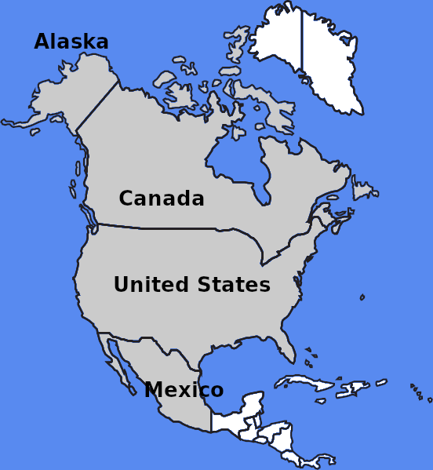

Nordamerika

Dunkelgraue Länder besitzen einen eigenen Bereich.
Länder mit zu wenigen Sehenswürdigkeiten sind hellgrau dargestellt und befinden sich zusammen im Bereich "More Countries" (weitere Länder).
Weiße Länder besitzen entweder keine unterirdischen Sehenswürdigkeiten oder wurden bisher nicht bearbeitet.

 Index
Index Themen
Themen Hierarchisch
Hierarchisch Länder
Länder Karten
Karten Suche
Suche